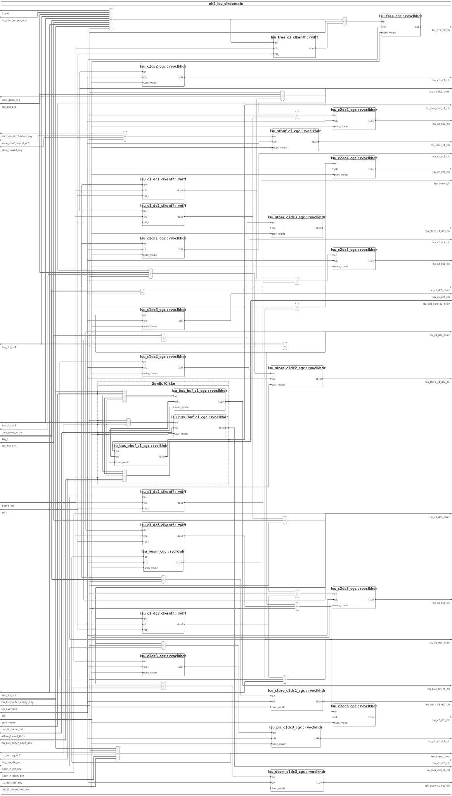

Documentation for project SweRV-EH2
Generated by Sigasi 4.14.0.202112031056
Revision 2021-12-07
Table of Contents
Project files overview
Design Units
This projects has 242 design units.
Module eh2_lsu_clkdomain
This design unit is implemented in eh2_lsu_clkdomain.sv
This file depends on: eh2_def.sv, beh_lib.sv
Parameters and Ports
Parameters
| Name | Type | Default Value | Description |
|---|
| pt | eh2_param_t | '{ ATOMIC_ENABLE : 5'h01 , BHT_ADDR_HI : 8'h09 , BHT_ADDR_LO : 6'h03 , BHT_ARRAY_DEPTH : 16'h0080 , BHT_GHR_HASH_1 : 5'h00 , BHT_GHR_SIZE : 8'h07 , BHT_SIZE : 17'h00200 , BITMANIP_ZBA : 5'h01 , BITMANIP_ZBB : 5'h01 , BITMANIP_ZBC : 5'h01 , BITMANIP_ZBE : 5'h00 , BITMANIP_ZBF : 5'h00 , BITMANIP_ZBP : 5'h00 , BITMANIP_ZBR : 5'h00 , BITMANIP_ZBS : 5'h01 , BTB_ADDR_HI : 9'h009 , BTB_ADDR_LO : 7'h03 , BTB_ARRAY_DEPTH : 15'h0080 , BTB_BTAG_FOLD : 5'h00 , BTB_BTAG_SIZE : 10'h005 , BTB_BYPASS_ENABLE : 5'h01 , BTB_FOLD2_INDEX_HASH : 5'h00 , BTB_FULLYA : 5'h00 , BTB_INDEX1_HI : 9'h009 , BTB_INDEX1_LO : 9'h003 , BTB_INDEX2_HI : 9'h010 , BTB_INDEX2_LO : 9'h00A , BTB_INDEX3_HI : 9'h017 , BTB_INDEX3_LO : 9'h011 , BTB_NUM_BYPASS : 8'h08 , BTB_NUM_BYPASS_WIDTH : 8'h04 , BTB_SIZE : 17'h00200 , BTB_TOFFSET_SIZE : 9'h00C , BTB_USE_SRAM : 5'h00 , BUILD_AHB_LITE : 4'h0 , BUILD_AXI4 : 5'h01 , BUILD_AXI_NATIVE : 5'h01 , BUS_PRTY_DEFAULT : 6'h03 , DATA_ACCESS_ADDR0 : 36'h000000000 , DATA_ACCESS_ADDR1 : 36'h0C0000000 , DATA_ACCESS_ADDR2 : 36'h0A0000000 , DATA_ACCESS_ADDR3 : 36'h080000000 , DATA_ACCESS_ADDR4 : 36'h000000000 , DATA_ACCESS_ADDR5 : 36'h000000000 , DATA_ACCESS_ADDR6 : 36'h000000000 , DATA_ACCESS_ADDR7 : 36'h000000000 , DATA_ACCESS_ENABLE0 : 5'h01 , DATA_ACCESS_ENABLE1 : 5'h01 , DATA_ACCESS_ENABLE2 : 5'h01 , DATA_ACCESS_ENABLE3 : 5'h01 , DATA_ACCESS_ENABLE4 : 5'h00 , DATA_ACCESS_ENABLE5 : 5'h00 , DATA_ACCESS_ENABLE6 : 5'h00 , DATA_ACCESS_ENABLE7 : 5'h00 , DATA_ACCESS_MASK0 : 36'h07FFFFFFF , DATA_ACCESS_MASK1 : 36'h03FFFFFFF , DATA_ACCESS_MASK2 : 36'h01FFFFFFF , DATA_ACCESS_MASK3 : 36'h00FFFFFFF , DATA_ACCESS_MASK4 : 36'h0FFFFFFFF , DATA_ACCESS_MASK5 : 36'h0FFFFFFFF , DATA_ACCESS_MASK6 : 36'h0FFFFFFFF , DATA_ACCESS_MASK7 : 36'h0FFFFFFFF , DCCM_BANK_BITS : 7'h03 , DCCM_BITS : 9'h010 , DCCM_BYTE_WIDTH : 7'h04 , DCCM_DATA_WIDTH : 10'h020 , DCCM_ECC_WIDTH : 7'h07 , DCCM_ENABLE : 5'h01 , DCCM_FDATA_WIDTH : 10'h027 , DCCM_INDEX_BITS : 8'h0B , DCCM_NUM_BANKS : 9'h008 , DCCM_REGION : 8'h0F , DCCM_SADR : 36'h0F0040000 , DCCM_SIZE : 14'h0040 , DCCM_WIDTH_BITS : 6'h02 , DIV_BIT : 7'h04 , DIV_NEW : 5'h01 , DMA_BUF_DEPTH : 7'h05 , DMA_BUS_ID : 9'h001 , DMA_BUS_PRTY : 6'h02 , DMA_BUS_TAG : 8'h01 , FAST_INTERRUPT_REDIRECT : 5'h01 , ICACHE_2BANKS : 5'h01 , ICACHE_BANK_BITS : 7'h01 , ICACHE_BANK_HI : 7'h03 , ICACHE_BANK_LO : 6'h03 , ICACHE_BANK_WIDTH : 8'h08 , ICACHE_BANKS_WAY : 7'h02 , ICACHE_BEAT_ADDR_HI : 8'h05 , ICACHE_BEAT_BITS : 8'h03 , ICACHE_BYPASS_ENABLE : 5'h01 , ICACHE_DATA_DEPTH : 18'h00200 , ICACHE_DATA_INDEX_LO : 7'h04 , ICACHE_DATA_WIDTH : 11'h040 , ICACHE_ECC : 5'h01 , ICACHE_ENABLE : 5'h01 , ICACHE_FDATA_WIDTH : 11'h047 , ICACHE_INDEX_HI : 9'h00C , ICACHE_LN_SZ : 11'h040 , ICACHE_NUM_BEATS : 8'h08 , ICACHE_NUM_BYPASS : 8'h04 , ICACHE_NUM_BYPASS_WIDTH : 8'h03 , ICACHE_NUM_WAYS : 7'h04 , ICACHE_ONLY : 5'h00 , ICACHE_SCND_LAST : 8'h06 , ICACHE_SIZE : 13'h0020 , ICACHE_STATUS_BITS : 7'h03 , ICACHE_TAG_BYPASS_ENABLE : 5'h01 , ICACHE_TAG_DEPTH : 17'h00080 , ICACHE_TAG_INDEX_LO : 7'h06 , ICACHE_TAG_LO : 9'h00D , ICACHE_TAG_NUM_BYPASS : 8'h02 , ICACHE_TAG_NUM_BYPASS_WIDTH : 8'h02 , ICACHE_WAYPACK : 5'h01 , ICCM_BANK_BITS : 7'h02 , ICCM_BANK_HI : 9'h003 , ICCM_BANK_INDEX_LO : 9'h004 , ICCM_BITS : 9'h010 , ICCM_ENABLE : 5'h01 , ICCM_ICACHE : 5'h01 , ICCM_INDEX_BITS : 8'h0C , ICCM_NUM_BANKS : 9'h004 , ICCM_ONLY : 5'h00 , ICCM_REGION : 8'h0E , ICCM_SADR : 36'h0EE000000 , ICCM_SIZE : 14'h0040 , IFU_BUS_ID : 5'h01 , IFU_BUS_PRTY : 6'h02 , IFU_BUS_TAG : 8'h04 , INST_ACCESS_ADDR0 : 36'h000000000 , INST_ACCESS_ADDR1 : 36'h0C0000000 , INST_ACCESS_ADDR2 : 36'h0A0000000 , INST_ACCESS_ADDR3 : 36'h080000000 , INST_ACCESS_ADDR4 : 36'h000000000 , INST_ACCESS_ADDR5 : 36'h000000000 , INST_ACCESS_ADDR6 : 36'h000000000 , INST_ACCESS_ADDR7 : 36'h000000000 , INST_ACCESS_ENABLE0 : 5'h01 , INST_ACCESS_ENABLE1 : 5'h01 , INST_ACCESS_ENABLE2 : 5'h01 , INST_ACCESS_ENABLE3 : 5'h01 , INST_ACCESS_ENABLE4 : 5'h00 , INST_ACCESS_ENABLE5 : 5'h00 , INST_ACCESS_ENABLE6 : 5'h00 , INST_ACCESS_ENABLE7 : 5'h00 , INST_ACCESS_MASK0 : 36'h07FFFFFFF , INST_ACCESS_MASK1 : 36'h03FFFFFFF , INST_ACCESS_MASK2 : 36'h01FFFFFFF , INST_ACCESS_MASK3 : 36'h00FFFFFFF , INST_ACCESS_MASK4 : 36'h0FFFFFFFF , INST_ACCESS_MASK5 : 36'h0FFFFFFFF , INST_ACCESS_MASK6 : 36'h0FFFFFFFF , INST_ACCESS_MASK7 : 36'h0FFFFFFFF , LOAD_TO_USE_BUS_PLUS1 : 5'h00 , LOAD_TO_USE_PLUS1 : 5'h00 , LSU_BUS_ID : 5'h01 , LSU_BUS_PRTY : 6'h02 , LSU_BUS_TAG : 8'h04 , LSU_NUM_NBLOAD : 9'h008 , LSU_NUM_NBLOAD_WIDTH : 7'h03 , LSU_SB_BITS : 9'h010 , LSU_STBUF_DEPTH : 8'h0A , NO_ICCM_NO_ICACHE : 5'h00 , NO_SECONDARY_ALU : 5'h00 , NUM_THREADS : 6'h01 , PIC_2CYCLE : 5'h01 , PIC_BASE_ADDR : 36'h0F00C0000 , PIC_BITS : 9'h00F , PIC_INT_WORDS : 8'h04 , PIC_REGION : 8'h0F , PIC_SIZE : 13'h0020 , PIC_TOTAL_INT : 12'h07F , PIC_TOTAL_INT_PLUS1 : 13'h0080 , RET_STACK_SIZE : 8'h04 , SB_BUS_ID : 5'h01 , SB_BUS_PRTY : 6'h02 , SB_BUS_TAG : 8'h01 , TIMER_LEGAL_EN : 5'h01 } | |
Ports
| Name | Direction | Type | Description |
|---|
| clk | in | logic | clock |
| active_clk | in | logic | clock |
| active_thread_l2clk | in | [pt.NUM_THREADS-1:0] logic | per thread l2 clock |
| rst_l | in | logic | reset |
| dec_tlu_force_halt | in | [pt.NUM_THREADS-1:0] logic | Inputs |
| clk_override | in | logic | chciken bit to turn off clock gating |
| addr_in_dccm_dc2 | in | logic | address in dccm |
| addr_in_pic_dc2 | in | logic | address is in pic |
| dma_dccm_req | in | logic | dma is active |
| dma_mem_write | in | logic | dma write is active |
| store_stbuf_reqvld_dc5 | in | logic | allocating in to the store queue |
| lr_vld | in | [pt.NUM_THREADS-1:0] logic | needed for clk gating |
| stbuf_reqvld_any | in | logic | stbuf is draining |
| stbuf_reqvld_flushed_any | in | logic | stbuf is flushed |
| lsu_busreq_dc5 | in | logic | busreq in dc5 |
| lsu_bus_idle_any | in | [pt.NUM_THREADS-1:0] logic | |
| lsu_bus_buffer_pend_any | in | [pt.NUM_THREADS-1:0] logic | bus buffer has a pending bus entry |
| lsu_bus_buffer_empty_any | in | [pt.NUM_THREADS-1:0] logic | external bus buffer is empty |
| lsu_stbuf_empty_any | in | [pt.NUM_THREADS-1:0] logic | stbuf is empty |
| dec_tlu_force_halt_bus | in | [pt.NUM_THREADS-1:0] logic | Bus synchronized version of force halt |
| lsu_bus_clk_en | in | logic | bus clock enable |
| lsu_p | in | eh2_lsu_pkt_t | lsu packet in decode |
| lsu_pkt_dc1 | in | eh2_lsu_pkt_t | lsu packet in dc1 |
| lsu_pkt_dc2 | in | eh2_lsu_pkt_t | lsu packet in dc2 |
| lsu_pkt_dc3 | in | eh2_lsu_pkt_t | lsu packet in dc3 |
| lsu_pkt_dc4 | in | eh2_lsu_pkt_t | lsu packet in dc4 |
| lsu_pkt_dc5 | in | eh2_lsu_pkt_t | lsu packet in dc5 |
| lsu_bus_obuf_c1_clken | out | [pt.NUM_THREADS-1:0] logic | Outputs |
| lsu_busm_clken | out | logic | |
| lsu_c1_dc1_clk | out | logic | dc3 pipe single pulse clock |
| lsu_c1_dc2_clk | out | logic | dc3 pipe single pulse clock |
| lsu_c1_dc3_clk | out | logic | dc3 pipe single pulse clock |
| lsu_c1_dc4_clk | out | logic | dc4 pipe single pulse clock |
| lsu_c1_dc5_clk | out | logic | dc5 pipe single pulse clock |
| lsu_c2_dc1_clk | out | logic | dc3 pipe double pulse clock |
| lsu_c2_dc2_clk | out | logic | dc3 pipe double pulse clock |
| lsu_c2_dc3_clk | out | logic | dc3 pipe double pulse clock |
| lsu_c2_dc4_clk | out | logic | dc4 pipe double pulse clock |
| lsu_c2_dc5_clk | out | logic | dc5 pipe double pulse clock |
| lsu_c1_dc1_clken | out | logic | clock |
| lsu_c1_dc2_clken | out | logic | clock |
| lsu_c1_dc3_clken | out | logic | |
| lsu_c1_dc4_clken | out | logic | |
| lsu_c1_dc5_clken | out | logic | |
| lsu_store_c1_dc1_clk | out | logic | store in dc1 |
| lsu_store_c1_dc2_clk | out | logic | store in dc2 |
| lsu_store_c1_dc3_clk | out | logic | store in dc3 |
| lsu_dccm_c1_dc3_clk | out | logic | dccm clock |
| lsu_pic_c1_dc3_clk | out | logic | pic clock |
| lsu_stbuf_c1_clk | out | logic | |
| lsu_bus_obuf_c1_clk | out | [pt.NUM_THREADS-1:0] logic | ibuf clock |
| lsu_bus_ibuf_c1_clk | out | [pt.NUM_THREADS-1:0] logic | ibuf clock |
| lsu_bus_buf_c1_clk | out | [pt.NUM_THREADS-1:0] logic | ibuf clock |
| lsu_busm_clk | out | logic | bus clock |
| lsu_free_c2_clk | out | logic | |
| scan_mode | in | logic | |
Instantiations
- lsu_free_c1_clkenff : rvdff
- lsu_c1_dc1_clkenff : rvdff
- lsu_c1_dc2_clkenff : rvdff
- lsu_c1_dc3_clkenff : rvdff
- lsu_c1_dc4_clkenff : rvdff
- lsu_c1_dc5_clkenff : rvdff
Block Diagram
